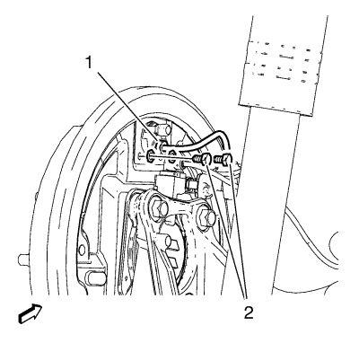
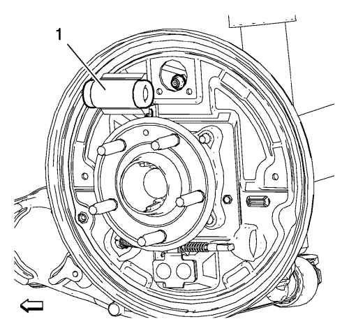

Sustitución del cilindro del freno trasero
Procedimiento de desmontaje
Advertencia: Consulte Advertencia relacionada con el polvo procedente de los frenos en la sección Prólogo.
Advertencia: Consulte Advertencia de líquido de frenos irritante en la sección Prólogo.
Precaución:Consulte Advertencia sobre los efectos del líquido de frenos sobre la pintura y los componentes eléctricos en la sección Prólogo.
- Elevar el vehículo y soportarlo de manera segura. Consultar Elevación y soporte en alto del vehículo .
- Desmonte la rueda del vehículo. Consultar Desmontaje y montaje de la rueda y el neumático .
- Desmontar el tambor de freno. Consultar Sustitución del tambor de freno .
- Desmonte las zapatas de freno. Consultar Sustitución de la zapata de freno .
- Limpie cualquier residuo de suciedad o contaminantes alrededor del cilindro de la rueda.

- Desconecte el herraje del tubo de freno (1) del cilindro de la rueda. Tape el tubo de freno abierto para impedir la pérdida de líquido y
- Desmonte los 2 pernos de montaje del cilindro de la rueda (2).

- Desmonte el cilindro de la rueda (1) de la placa portafrenos.
Procedimiento de montaje
- Monte el cilindro de la rueda (1) a la placa portafrenos.
Precaución:Consulte Precaución con las fijaciones en la sección Prólogo.
- Monte los pernos de montaje del cilindro de rueda (2) y apriételos a 10 N·m (89 lib. pie).
- Conecte el herraje del tubo de freno (1) en el cilindro de la rueda.
- Monte las zapatas de freno. Consultar Sustitución de la zapata de freno .
- Montar el tambor de freno. Consultar Sustitución del tambor de freno .
- Purgue el sistema de sistema de frenos hidráulicos. Consultar Purga de aire del sistema de frenos hidráulicos .
- Monte el conjunto de neumático y llanta. Consultar Desmontaje y montaje de la rueda y el neumático .
- Bajar el vehículo.
| © Copyright Chevrolet. Reservados todos los derechos |